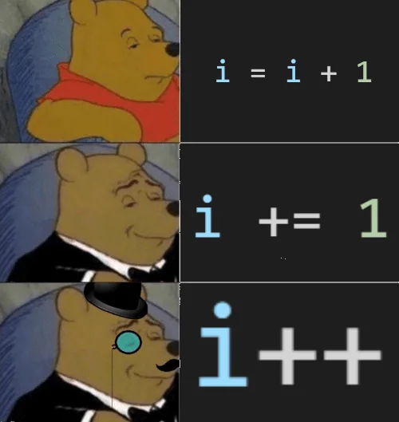

Keyboard shortcuts:
N/СпейсNext Slide
PPrevious Slide
OSlides Overview
ctrl+left clickZoom Element
If you want print version => add '
?print-pdf' at the end of slides URL (remove '#' fragment) and then print.
Like: https://wwwcourses.github.io/...CourseIntro.html?print-pdf
JavaScript: basic syntactic elements
Created for
Created by
Как работи една компютърна програма
За да започнете с първият си език за програмиране, не е необходимо да сте запознати с понятията, дадени в следното видео, но все пак помага ;)
Във видеото за илюстрация е използван езика C, но концепциите са валидни за всеки един език за програмиране.

Компилатор и Интерпретатор
- Компилатор: - програма, която превежда целия сорс код до машинни инструкции и след това компилираната програма се изпълнява.
- Може да си представите Компилатора като преводач, който първо ще прочете цялата книга, а след това ще започне с превода.
- Интерпретатор: - програма, която превежда инструкция от сорс кода, подава за изпълнение преведената инструкция и продължава със следващата инструкция от програмата.
- Може да си представите Интерпретатора, като преводач който превежда изречение след изречение.
- JavaScript, така както Python, PHP, Ruby, Perl, е интерпретаторен език, но съвременните интерпретатори са значително оптимизирани.
Как работи JS engin-a?

Структура на програмата
Структура на програмата
- Една JavaScript програма е последователност от инструкции. Или по-точно от declarations, statements и expressions.
- Инструкциите се разделят една от друга с ';'
- Последователност от инструкции, заградена в '{' и '}' се нарича блок.
- Ако направим аналогия с естествените езици:
Български език JavaScript роман, разказ и пр <=> program/script параграф, абзац <=> block изречение <=> инструкция
Последователност на изпълнението
Една JS програма се интерпретира последователно, ред по ред, освен в случаите, когато имаме условни оператори и функции, които ще бъдат детайлно разгледани в следващите теми.
Примери
// това е коментар, който не се изпълнява от системата
// показва „изскачащо“ съобщение с текст „Welcome“
alert("Welcome");
// декларира променливата answer
let answer;
// записва числото 42 в променливата answer
answer = 42;
// изписва стойността на answer в конзолата
console.log( answer );
// задава червен фон на документа
document.body.style.backgroundColor = "red";
Тук всички "инструкции" се разделят една от друга с ';'
Променливи (Variables)
Променливи (Variables)
Какво е променлива в JavaScript?
- Може да си представим променливата като етикет на кутия, в която съхраняваме разни неща.
- По-точно, променливата е "име" на част от паметта (RAM), в която съхраняваме данни, необходими за програмата.
- Програмиста задава това име, като следва определени правила.
- След като променливата е създадена можем да записваме и четем стойности от нея, т.е.да ги използваме в програмата.
Къде и как се създават променливите
let x = 1;
let y = 2;
let z;

Деклариране/Дефиниране
- Създаването на една променлива се нарича деклариране на променлива.
В JavaScript, преди ES6, се използваше запазената за езика дума
var. В ES 6, се въвеждат и нови думи за деклариране на променливи:letиconst, които ще разгледаме след като изясним понятията "scope" и "hoisting" - В съвременните JS приложения се препоръчва използването на
let, вместоvar. - Ако желаем, може при създаването на променливата, да запишем в нея конкретна стойност - т.е. да дефинираме(инициализираме) променливата.
- В JavaScript, една променлива винаги е дефинирана (има конкретна стойност), тъй като ако не зададем експлицитно стойност при декларацията, то в променливата се записва стойността undefined.
let x; // деклариране на променливата x (в x се записва undefined)
x = 10; // записваме в x стойност 10
let y=10; // дефиниране на променливата y (в y се записва числото 10)
let a,b; // едновременно деклариране на променливите a и b
Глобални променливи
- В JavaScript, променлива може да се създаде и без да се декларира явно с
var, let или const. Например: - Това се счита за изключително лоша практика, тъй като се създава "глобална променлива" (в темата за scope, ще разгледаме защо), и в новите версии на езика (от ЕС5.1) при използването на strict mode, това би довело до грешка!
x = 10;
console.log(x);
// enable whole-script strict mode syntax:
'use strict';
x = 10; // Uncaught ReferenceError: x is not defined
Повече информация: Strict_mode @MDN
Правила за имена на променливи
- Името (идентификатор) на променливата трябва да започва с буква 1 или '$' или '_'
- След това в името могат да се включат и цифри, освен горепосочените символи.
- Нищо друго, дори спейс или тире, не е допустимо да участва в името на променливата.
- Не е препоръчително да започват с '$' или '_' (използват се за специфични случаи, например в JQuery и пр.)
- Прави се разлика между малки/големи букви тъй като JavaScript е case–sensitive език.
1. Позволяват се латински букви и определени unicode символи: Valid JavaScript variable names in ECMAScript 6
Правила за имена на променливи
- Не може да използвате за имена на променливи някоя от запазените думи в JavaScript, като:
- Пълен списък: http://www.w3schools.com/js/js_reserved.asp
break delete for let super void
case do function new switch while
catch else if package this with
class enum implements private throw yield
const export import protected true
continue extends in public try
debugger false instanceof return typeof
default finally interface static let
Конвенции и добри практики за именуване на променливи
- Конвенции и добрите практики не са задължителни правила, но е важно да ги следвате.
- Те спомагат за подобряване на четимостта и качеството на кода, предотвратяване на грешки и улесняват сътрудничеството между екип от програмисти.
 vs.
vs.

Конвенции и добри практики за именуване на променливи
- Препоръчва се имената на променливите да описват данните, които възнамеряваме да съхраняваме в тях.
- Ако е необходимо името да се състои от две или повече думи, то в JavaScript се препоръчва да се използва lowerCamelCase - първата дума започва с малка буква, а следващите думи се залепват непосредствено като започват с голяма буква.
// Лошо име на променлива: не дава никаква информация за това какви данни се съхраняват в променливата.
let x = 100;
// Добро име на променлива
let totalPrice = 100;
Примери:
let x; // ок
let $x; // позволено, но не се препоръчва
let userName; // ок
let user name; // SyntaxError!
let username; // ok, но е по-трудно четима и не е според конвенцията (lowerCamelCase)
let user-first-name; //SyntaxError
let user_first_name; //ok, но не е според конвенцията (lowerCamelCase)
let userFirstName; //ok
let x234AB$$53; // синтактично е ок, но какво ли означава?
Прости типове данни (Primitive types)
Прости типове данни (Primitive types)
- По същество, всяка една компютърна програма касае обработката на данни. Ето защо е изключително важно да се запознаем с типовете данни в JavaScript и операциите които може да извършваме над тях.
- Най-общо, типовете данни се делят на:
- "прости" ( наричат се още примитивни, атомарни)
- "съставни " типове
Число (number)
// цяло число, положително
let x = 10;
// цяло число, отрицателно
let y = -5;
// реално число
const pi = 3.14;
// реално число, експонентен запис:
let million = 1e6;
- Експонентния запис:
xeyсе чете като x*10y
numeric separator
- numeric separator е все още в Proposal Stage. Преди да го използвате, се уверете че поддръжката му от браузърите ви удовлетворява: numeric separator @caniuse.com
let budget = 1_234_000_000
Низ (string):
- Последователност от символи, заградена в единични или двойни кавички
- В JavaScript, за разлика от други езици, няма значение, дали ще използваме единични или двойни кавички, но трябва да внимаваме ако такива символи ще присъстват в самия низ
let userName = 'Ada Byron'; // ок
let nickName = "LadyLovelace"; //ок
let quotGood = 'И той отсече - "Ще вали!"'; //ок
let quotBad = "И той отсече - "Ще вали!""; //SyntaxError
let foo = "What's the time?" //ок
\ escape character in string:
Ако в низ използваме символа '\' (backslash), то той не се тълкува буквално, а заедно със непосредствено следващия го символ образуват т.нар. ескейп последователност, която има специално значение.
Някои основни ескейп последователности:
| \n: | line feed | нов ред |
| \t: | horizontal tab | таб |
| \": | Double quotation mark | двойни кавички, които не се тълкуват като специален символ |
| \': | Single quotation mark | кавичка, която не се тълкува като специален символ |
| \\: | backslash | не се тълкува като специален символ |
Някои основни ескейп последователности - пример:
console.log('1. Ето какво прави "\\n": --->\n<---');
console.log('2. Ето какво прави "\\t": --->\t<---');
console.log('3. Ето какво прави "\\"": --->\"<---');
console.log('4. Ето какво прави "\\\'": --->\'<---');
1. Ето какво прави "\n": --->
<---
2. Ето какво прави "\t": ---> <---
3. Ето какво прави "\"": --->"<---
4. Ето какво прави "\'": --->'<---
Multiline strings?
- Забележете, че в низовете не може да използваме буквално символ за нов ред (клавиша enter)
- Интерпретатора очаква затварящата кавичка ( " или ' ) да бъде на същия ред и ако не я намери ще даде грешка:
- но можем да заместим 'enter' с "\n" в низа:
- или да изпозваме конкатениране (разгледано в следващите слайдове):
let lyrics = "В късна нощ — преди години — сам над книгите старинни,
безотраден, вниквах, жаден, в знания незнайни тук; —
скръбен, търсех без сполука мир във тайната наука —
но оборен в сънна скука, чух внезапно бавен звук."
// Uncaught SyntaxError: Invalid or unexpected toke
let lyrics = "В късна нощ — преди години — сам над книгите старинни,\nбезотраден, вниквах, жаден, в знания незнайни тук; —\nскръбен, търсех без сполука мир във тайната наука —\nно оборен в сънна скука, чух внезапно бавен звук."
let lyrics = "В късна нощ — преди години — сам над книгите старинни," +
"безотраден, вниквах, жаден, в знания незнайни тук; —" +
"скръбен, търсех без сполука мир във тайната наука —" +
"но оборен в сънна скука, чух внезапно бавен звук.";
Template Strings
- В ES6 се въвежда и така наречения "template string", където низа се огражда в
` и `(backticks). - Те добавят възможност в низ, да въвеждаме нов (enter) ред
- както и да се изчисляват изрази и интерполират променливи:
let lyrics = `В късна нощ — преди години — сам над книгите старинни,
безотраден, вниквах, жаден, в знания незнайни тук; —
скръбен, търсех без сполука мир във тайната наука —
но оборен в сънна скука, чух внезапно бавен звук.`
console.log( `2 + 4 = ${2+4}` )
// 2 + 4 = 6
let firstName = "Ada";
console.log(`Hello, ${firstName}, how are you today?`)
// Hello, Ada, how are you today?
Template Strings - examples
console.log(`234 + 432 = ${234 + 432}`)
// 234 + 432 = 666
let x = 3, y = 4;
console.log(`x = ${x}, y = ${y}, x+y = ${x+y}`)
// x = 3, y = 4, x+y = 7
Булев тип (boolean)
Данните от този тип могат да приемат само 2 стойности: true или false
Използват се предимно в условните оператори, които са разгледани по-нататък.
let start = true;
let stop = false;
null and undefined
null: обозначава умишлено зададена "празна" стойност. Обикновено се използва, когато инициализирате променлива с намерение да й присвоите стойност по-късно.undefined: стойност, която JavaScript автоматично присвоява на променливи, които не са инициализирани, или на свойства, които не съществуват в обекти.- Основната разлика е, че null е умишлено зададена стойност от програмиста, докато undefined е резултат от автоматичното поведение на JavaScript
let x = null;
console.log(x); // null
let y;
console.log(y); // undefined
typeof оператор
- За да разберем какъв е типът данни на дадена стойност, може да използваме оператора
typeof
console.log( typeof 5 );
// number
console.log( typeof "Ada" );
// string
console.log( typeof true );
// boolean
console.log( typeof undefined );
// undefined
console.log( typeof null );
// object
// но това е бъг още от първите версии на JS. null не е обект, а отделен примитивен тип.
стойността NaN
- В JavaScript, към типа number спада и стойността NaN (Not-a-Number).
- Тя не се използва директно, а е дефинирана за да обозначи резултат от числова операция, която не е число.
- За да проверите дали дадена стойност е NaN, използвайте функцията
Number.isNaN():
let res = 0 / "a";
console.log( res ); // NaN
console.log( typeof(res) ); // number
console.log(Number.isNaN(NaN)); // true
console.log(Number.isNaN("NaN")); // false
Коментари
- Self learning section
- JavaScript Comments
Оператор за присвояване (Assignment operator)
Оператор за присвояване (Assignment operator)
- Assignment '
='LHS = RHS; - LHS: Left Hand Side: трябва да бъде декларирана променлива. Ако променливата не е декларирана ще се създаде глобална променлива, което е изключително лоша практика.
- RHS: Right Hand Side: израз, който се изчислява и стойността му се записва в LHS променливата
// декларираме променливите x и y:
let x, y;
// записваме в паметта, сочена от x, числото 3:
x = 3;
// в x записваме стойността на x, повдигната на степен 2:
x = x ** 2; // след този израз в x имаме стойността 9
- Понятията "LHS" и "RHS" се използват не само в контекста на assignment оператора.
- Когато променлива се използва като LHS то тогава записваме стойност в нея
- Когато се използва като RHS => четем стойност от нея.
let x, y = 1;
x = y; // тук четем от y и записваме в x
Резултат от операцията
- Операцията "присвояване" връща стойност! И това е стойността, която ще се запише в LHS променливата
- Поради това, можем да имаме няколко оператора за присвояване в израз:
// декларираме променливите x и y
let x,y;
// присвояваме и на двете променливи стойността 1
y = x = 1;
console.log(`x = ${x}`); // x = 1
console.log(`y = ${y}`); // y = 1
Съкратен запис
- Когато имаме една и съща променлива от двете страни на assignment оператора и знак за операция, то можем да запишем израза съкратено.
let x = 4;
x += 3; // x = x + 3;
x -= 3; // x = x - 3;
x *= 3; // x = x * 3;
x /= 3; // x = x / 3;
x %= 3; // x = x % 3;
Аритметични оператори (Arithmetic operators)
Аритметични оператори (Arithmetic operators)
basics
- Събиране: '
+'console.log(2 + 4); //6 console.log(2 + -4); //-2 - Изваждане: '
-'console.log(20 - 4); //16 console.log(20 - -4); //24 - Умножаване: '
*'console.log(2 * 4); //8 console.log(2 * -4); //-8 - Делене: '
/'console.log(100 / 5); //20 console.log(100 / -5); //-20 console.log(7 / 2); //3.5
Проблеми при аритметиката с реални числа
- Поради начина на представяне на реални числа в паметта, аритметичните операции с реални числа не работят с абсолютна точност.
- Това не е специфично за JavaScript, a при всеки един език за програмиране.
- Когато е необходима максимална точност при работа с реални числа се използват специално разработени за целта библиотеки.
console.log(0.1+0.2);
// 0.30000000000000004
Делене по Модул (Modulo Operation): '%'
Връща остатъка от целочислено делене
console.log( 0 % 3 ); // 0
console.log( 1 % 3 ); // 1
console.log( 2 % 3 ); // 2
console.log( 3 % 3 ); // 0
console.log( 4 % 3 ); // 1
console.log( 5 % 3 ); // 2
console.log( 6 % 3 ); // 0
console.log( 7 % 3 ); // 1
console.log( 8 % 3 ); // 2
console.log( 9 % 3 ); // 0
Reference: Remainder @MDN
Степенуване (Exponentiation): **
Въвежда се от 2016г. в ES7. Внимавайте, ако трябва да поддържате по-стари браузъри: caniuse **
console.log(2**10); //1024
За по-стари браузери използваме Math.power()
console.log(Math.pow(2,10)); //1024
Reference: Степенуване @MDN
Increment и Decrement
:) You know you updated from Junior to Senior developer when:
Инкрементиране (Increment)
- Увеличава стойността на променлива с 1 и връща стойност.
- Има 2 записа:
- префиксен (++i): променливата се увеличава с 1. Стойността на израза е i+1.
- суфиксен (i++): променливата се увеличава с 1. Стойността на израза е i
- Reference: Increment @MDN
let i = 2;
//postfix increment:
let j = i++; // j = 2, i = 3
//prefix increment:
let j = ++i; // j = 3, i = 3
Декрементиране (Decrement)
- Намалява стойността на променлив с 1. Аналогичен на инкремента.
- Reference: Increment @MDN
let i = 2;
//postfix decrement:
let j = i--; // j = 2, i = 1
//prefix decrement:
let j = --i; // j = 1, i = 1
Increment - examples
let x = 1;
console.log(x++); //1
console.log(x); //2
let y = 1;
console.log(++y); //2
console.log(y); //2
Increment - examples
let x = 1;
let y = 1;
console.log( x++ + ++y); // 3
console.log(`x = ${x}`); // x = 2
console.log(`y = ${y}`); // y = 2
Math object methods
За по-сложни математически операции, може да използвате методите на вградения в езика Math object
Math.round(3.65); //4
Math.pow(2,10); // 1024
Math.min(1,2,3,4,5); // 1
Math.max(1,2,3,4,5); // 5
Слепване на низове (String concatenation)
Слепване на низове (String concatenation)
- Конкатенация (слепване) на низове: '
+'let firstName = "Ada"; let surName = "Byron"; console.log (firstName + " " + surName); // "Ada Byron" - Ако от двете страни на '+' имаме различни типове, например number и string, то JavaScript преобразува числото до string и извършва concatenation, а не събиране!
console.log(2+"1"); // 21 - Такова скрито преобразуване на типове се нарича type coercion.
Преобразуване на низ в число
Преобразуване на низ в число
- Често в практиката се налага да преобразуваме явно низ до число. За целта в JS съществуват различни подходи:
let x = "42.5";
// Преобразува низа в число (десетично или цяло, в зависимост от съдържанието
console.log( Number(x) ); //42.5
// Преобразува низа в число с плаваща запетая.
console.log( parseFloat(x) ); // 42.5
// Преобразува низа в цяло число (премахва десетичната част).
console.log( parseInt(x) ); //42
// Умножава низа по 1, което го преобразува автоматично в число.
console.log( x*1 ); //42.5
// Унарният плюс (+) преобразува низа в число.
console.log( +x ); //42.5
Приоритет и асоциативност на операциите
Приоритет и асоциативност на операциите
- Както в математиката, така всички операции в JS (не само разгледаните до момента) имат приоритет и асоциативност.
- Операциите с по-висок приоритет се изпълняват първи.
- Асоциативността определя посоката на изпълнение: от ляво-на дясно или от дясно на ляво.
- Приоритета и асоциативност на всички операции в JS e даден в Operator_Precedence Table @mdn
console.log( 3+2**2**3/2 )
// резултата е 131, защото:
// '**' => приоритет 14, от дясно на ляво
// '/' => приоритет 13, от ляво на дясно
// '+' => приоритет 12, от ляво на дясно
// 3+2**(2**3)/2=>
// 3+(2**8)/2=>
// 3+(256/2)=>
// 3+128 =>
// 131
Примери и Задачи
Примери и Задачи
Примери: Създаване на променливи и основни операции с простите типове данни.
See the Pen Simple variables and operations by Iva Popova (@webdesigncourse) on CodePen.
Задача: Изчисляване на BMI (Индекс на телесната маса)
See the Pen BMI simplest calculation by Iva Popova (@webdesigncourse) on CodePen.
- Работете във файл: BMI_calc.js
Оператори за сравнение (Comparison Operators)
Оператори за сравнение (Comparison Operators)
- Операторите за сравнение в JavaScript се използват за сравняване на стойности (числа, низове и други типове данни) и връщане на булеви резултати (true или false).
- Тези оператори играят основна роля при условни конструкции като if, когато трябва да проверим дали дадено условие е изпълнено.
- Reference: JavaScript Comparison and Logical Operators (by w3schools)
| Оператор | Описание | Пример |
|---|---|---|
| == | равенство | 5 == 5 // true |
| === | строго равенство | 5 === "5" // false |
| != | неравенство | 5 != 3 // true |
| !== | строго неравенство | 5 !== "5" // true |
| > | по-голямо от | 10 > 5 // true |
| < | по-малко от | 3 < 5 // true |
| >= | по-голямо или равно на | 5 >= 5 // true |
| <= | по-малко или равно на | 4 <= 3 // false |
примери
console.log(2 == 2); // true
console.log(2 == "2"); // true (the string is coerced to a number value.)
console.log(2 === "2"); // false (no type coercion)
// the Boolean operand "true" is converted to 1; "false" is converted to 0
console.log(true == 1); // true
console.log(false == 0); // true
console.log(true > false); // true
// lexicographic order, when both operands are strings
console.log( "2" > "19999" ) // true, as ("2" > "1") is true
console.log( "b" > "azzzz" ) // true, as ("b" > "a") is true
- Забележете, че всички оператори за сравнение винаги връщат Булев тип стойност (true/false)
lexicographic ordering
- При сравняването на низове, се използва лексикографската им подредба (Lexicographical_order @wikipedia), базирана на кодовете на символите от използваната кодова таблица (unicode, по дефоулт).
- При сравняване на низове с различна дължина, по-късият се попълва с "нулеви" символи до достигане на дължината на по-дългия. "Нулевите символи" са с възможно най-малък код.
- Самото сравняване се извършва символ по символ. Ако символите са еднакви, се продължава със следващите символи.
console.log( "1" < "11"); // true, as "none symbol" code is smaller than "1" symbol code
console.log( "2" > "11"); // true, as "2" code is bigger than "1" code
console.log( 'a' > 'A'); // true, as 'a' code is bigger than 'A' code
console.log( "1199" > "12"); // false, as "11">"12" is false
console.log( "1" == "12"); // false, as "none symbol" is not == "2"
Повече за операторите за сравнение и как работи с тях JS:
логически оператори (Logical Operators)
логически оператори (Logical Operators)
- Логическите оператори намират приложение предимно при условните конструкции като if, разглеждани детайлно в следващата тема.
- Обикновено, логическите оператори се използват над Булев тип операнди, за да съставим по-сложни изрази.
- Например: "Вярно ли е, че потребителят е пълнолетен и е от България"
- Но логическите оператори могат да се използват и над друг тип данни. В такъв случай, те не връщат Булева стойност.
- Справочник:
- JavaScript Comparison and Logical Operators (by w3schools)
- Как работят логическите оператори и каква стойност връщат се вижда от следната "таблица на истинност" ( T - true; F - false)
- Забележете, че за разлика от AND и OR, логическото отрицание (NOT) е унарна операция (т.е. работи върху един операнд)
- Примери
| expr1 | expr2 | AND expr1 && expr2 |
OR expr1 || expr2 |
NOT !expr1 |
|---|---|---|---|---|
| T | T | T (expr2) | T (expr1) | F |
| T | F | F (expr2) | T (expr1) | F |
| F | T | F (expr1) | T (expr2) | T |
| F | F | F (expr1) | F (expr2) | T |
console.log( true && false ); // false
console.log( true || false ); // true
console.log( !true ); // false
// ~~~~~~~~~~~~~~~~~~~~~~~~~~~~~~~~~~~~~~~~~~~~~~~~~~~~~~~~~
let userAge = 19;
let userCountry = 'BG'
console.log( userAge>=18 && userCountry==='UK' ); // false ( true && false = false)
// ~~~~~~~~~~~~~~~~~~~~~~~~~~~~~~~~~~~~~~~~~~~~~~~~~~~~~~~~~
// когато операндите не са boolean, то и резултата не е boolean
let userName;
console.log( userName || 'Anonymous' ) // 'Anonymous'
Изчисляване на истинностни стойности
- Изчисляване на истинностни стойности в JavaScript се отнася до процеса, чрез който стойностите се оценяват като "истинни" (true) или "лъжливи" (false), когато са в Булев контекст.
- Когато трябва да се изчисли истинностната стойност на даден операнд се следват правилата:
- Reference: Truthy @MDN
| Type: | =False | =True |
|---|---|---|
| number | 0/NaN | всяко число, различно от 0/NaN |
| string | "" | всеки низ, който не е празен |
| undefined | undefined | - |
| null | null | - |
Изчисляване на истинностна стойност - примери
See the Pen JS: Truth Values Evaluation by Iva Popova (@webdesigncourse) on CodePen.
Short-circuit evaluation
Short-circuit_evaluation @MDNSee the Pen JS: Short-circuit evaluation by Iva Popova (@webdesigncourse) on CodePen.
Условни изрази (Conditional statements)
Условни изрази (Conditional statements)
if statement
if(условие){
изрази, които ще се изпълнят, ако условието е истина
}
if( age > 18 ){
status = "adult";
}
if-else statement
if( условие ){
изрази, които ще се изпълнят, ако условието е истина
}else {
изрази, които ще се изпълнят, ако условието е лъжа
}
if( age > 18 ){
status = "adult";
}else {
status = "child";
}
Примери
let x = 5;
if(x%2){
console.log(`Odd`);
}else{
console.log(`Even`);
}
if-else-if statement
if( условие1){
изрази, които ще се изпълнят, ако условие1 е истина
}else if (условие2) {
изрази, които ще се изпълнят, ако условие1 e лъжа,
а условие2 е истина
}else {
изрази, които ще се изпълнят, ако нито едно от
горните условия не е истина
}
- Задължително започваме с
if{}блок - След него може да има 0 или повече
else if{}блока else{}блока е винаги в края, като не е задължителен, но се препоръчва да присъства.
if-else-if statement - пример
if( age > 18 ){
status = "adult";
}else if( age < 18 && age > 12){
status = "teen";
}else{
status = "child"
}
В примера, който е коректен синтактично, има бъг - можете ли да го откриете?
Switch Statement
switchstatement е алтернатива на множествоelse-if...else-if, подходящ в случаите, когато трябва да се сравняват множество конкретни стойности на една променлива.- Self Learning: JavaScript Switch Statement
let fruit = "apple";
switch (fruit) {
case "apple":
console.log("Apple is red.");
break;
case "banana":
console.log("Banana is yellow.");
break;
default:
console.log("Unknown fruit.");
}
// Извежда: Apple is red.
switchизразът сравнява стойността на fruit със стойностите във всекиcase.- Ако е намерено съответствие (напр. fruit е "apple"), изпълнява се кодът в този
caseблок. breakпрекратяваswitchблока и предотвратява изпълнението на следващитеcaseблокове.defaultблокът се изпълнява, ако никой отcaseблоковете не съответства на стойността на fruit.
Условен оператор (Conditional (ternary) Operator)
Условен оператор (Conditional (ternary) Operator)
Условие ? Израз1 : Израз2
- ако Условие е истина (израз, който се изчислява до true) оператора връща стойността на Израз1
- ако Условие е лъжа (израз, който се изчислява до false) оператора връща стойността на Израз2
- Забележете, че оператора връща стойност (която можем да присвоим на променлива), за разлика от if..else стейтмънта.
- Разгледайте следните 2 примера, които са фунцкционално еквиваленти, но показват удобството от използването на ternary operator.
let x = 42;
let numType = x%2===0 ? "even" : "odd";
console.log(numType); // "even"
let x = 42, numType;
if(x%2===0){
numType = "even"
}else{
numType = "odd"
}
console.log(numType); // "even"
Примери и Задачи
Примери и Задачи
Task1: Increment and Comparison Operators
- Описанието на задачата е дадено като коментар в JS полето
See the Pen HW: JS increment operatorss by Iva Popova (@webdesigncourse) on CodePen.
Task2: Comparison Operators & Conditional Statement
- Описанието на задачите е дадено като коментар в съответните HTML и JS полета.
- Работете върху дадения код като добавите код, където е необходимо/указано.
See the Pen HW2: Comparison Operators & Conditional Statement by Iva Popova (@webdesigncourse) on CodePen.
Task3: Comparison Operators & Conditional Statement
- Описанието на задачите е дадено като коментар в JS полето.
- Работете върху дадения код, в JS полето, където е указано.
See the Pen HW1: Comparison Operators & Conditional Statement by Iva Popova (@webdesigncourse) on CodePen.
Task4: BMI Interpretation
See the Pen BMI Interpretation by Iva Popova (@webdesigncourse) on CodePen.
Цикли (Loops/Iteration Statements)
For Loop
for Statement: синтаксис
for (init; condition; increment) {
блок, който се изпълнява, докато condition
е истина
}
for(let i=0; i<5; i++){
console.log(i)
}
Стъпките, в един цикъл са:
- 1.
init: изпълнява се първа и само веднъж - 2.
condition: - ако е истина => изпълнява се блока
- ако е лъжа => излиза се от цикъла
- 3.
increment: изпълнява се след блока. Обикновено тук се променят променливите, които контролират цикъла. - 4. Преминава се към стъпка 2.
for Statement: блок-схема
for (init; condition; increment) {
block
}

for Statement: пример и program flow diagram

for Statement: пример 1
for (let i = 0; i < 5; i++) {
console.log("i=" + i);
}
// резултата, видим в конзолата, е:
i=0
i=1
i=2
i=3
i=4
for Statement: пример 2
// i е четно число, в интервала [0-10]
for (let i = 2; i <= 10; i = i+2){
console.log("i=", i);
}
// резултата, видим в конзолата, е:
i=2
i=4
i=6
i=8
i=10
for Statement: пример 3
// create the list element
let listNode = document.createElement(listType);
//create list items
for (let i = 1; i <= listItemsCount; i++){
let listItem = document.createElement('li');
listItem.innerHTML = 'Item '+ i;
listNode.appendChild(listItem);
}
// attach to output node:
outputNode.appendChild( listNode );
for Statement: пример 4
// half tree print
let treeDeep = 5;
for (let i = 1; i <= treeDeep; i++) {
console.log("*".repeat(i));
}
// резултата, видим в конзолата, е:
*
**
***
****
*****
for Statement: пример 5
// full tree print
let crownHeight = 6;
let boleHeight = 2;
let boleWidth = 3;
let spaceCount;
// print the crown:
for (let i = 1; i <= crownHeight; i++) {
spaceCount = Math.floor(crownHeight) - i;
console.log(" ".repeat(spaceCount) + "*".repeat(i * 2 - 1));
}
// print the bole:
spaceCount = Math.floor((crownHeight * 2 - 1 - boleWidth) / 2);
for (let i = 1; i <= boleHeight; i++) {
console.log(" ".repeat(spaceCount) + "*".repeat(boleWidth));
}
резултата, видим в конзолата, е:
*
***
*****
*******
*********
***********
***
***
While Loop
while statement: синтаксис
while ( condition) {
блок, който се изпълнява, докато condition е истина
}
Стъпките, в един while цикъл са:
- condition:
- ако е истина => изпълнява се блока,
- ако е лъжа => излиза се от цикъла
За да се избегне безкраен цикъл, променливата в condition трябва да променя стойността си в тялото на цикъла!
while statement: алгоритъм

while statement: пример 1
let userTries = 5;
while( userTries>0){
console.log(`Try: ${userTries}`);
userTries--; // ако този ред липсва, цикълът става безкраен!
}
Забележете, че този пример, би било по-добре да бъде имплементиран чрез for statement
for(let userTries = 5; userTries>0; userTries--){
console.log(`Try: ${userTries}`);
}
while statement: пример 2
Но когато не знаем предварително колко пъти ще се повтори цикъла използваме while
// Машината си "намисля" число:
let machineNumber = Math.round(Math.random() * 10);
console.log(`machineNumber: ${machineNumber}`);
// Потребителя "въвежда" число:
let userNumber = Math.round(Math.random() * 10);
console.log(`userNumber: ${userNumber}`);
while(userNumber != machineNumber){
// Потребителя "въвежда" ново число:
userNumber = Math.round(Math.random() * 10);
console.log(`new userNumber: ${userNumber}`);
}
Бихте ли могли да реализирате същата логика чрез for цикъл?
do-while statement: синтаксис
do{
блок, който се изпълнява, докато condition е истина
} while ( condition)
do-whileработи по същия начин кактоwhile, с единствената разлика, че блокът в тялото на цикъла ще се изпълни поне веднъж, независимо от истинностната стойност на условието.
do-while statement: пример
// Машината си "намисля" число:
let machineNumber = Math.round(Math.random() * 10);
console.log(`machineNumber: ${machineNumber}`);
do{
// Потребителя "въвежда" число:
userNumber = Math.round(Math.random() * 10);
console.log(`userNumber: ${userNumber}`);
} while(userNumber != machineNumber)
break and continue
break и continue
- Self-learning section:
- JavaScript Break and Continue @w3schools
Statements vs. Expressions
Statements vs. Expressions
В JavaScript се прави разлика между Statement и Expression
- Expression е израз, който може да бъде изчислен до конкретна стойност. Expression може да се сложи на всяко едно място, където бихме могли да зададем стойност.
2+3; // 2+3 е Expresion x = 5; // x = 5 e Expresion console.log(x**6-x) // x**6-x e Expresion x = y = 5; // тук имаме 2 Expresions: (y = 5) и (x = 5)
- Statement е израз, който извършва действие, но не се изчислява до стойност! Декларациите, циклите и
if()са пример за Statements.if(1){return 0}; // if Statement while(x = 2){console.log(x)}; // while Statement let x; // variable declaration Statement
Задачи за упражнение
Задачи за упражнение
Task5: Loops
- Описанието на задачите е дадено като коментар в JS полето.
- Изпратете линк на вашия Пен
See the Pen HW: loops by Iva Popova (@webdesigncourse) on CodePen.
допълнителни ресурси по темата
These slides are based on
customized version of
framework